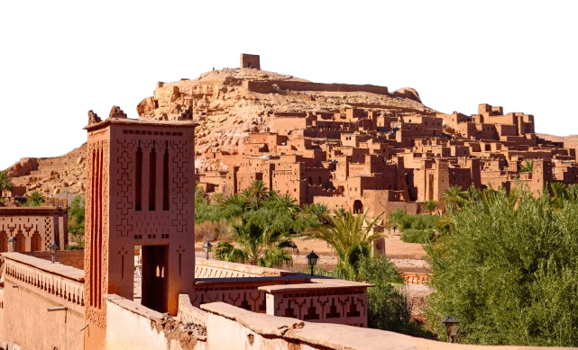
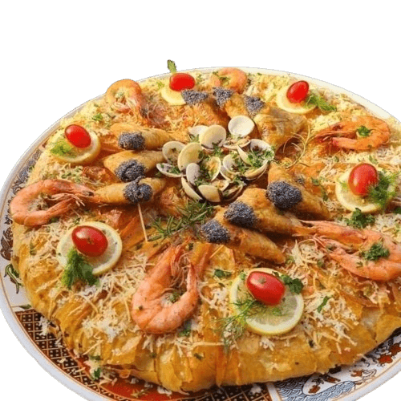
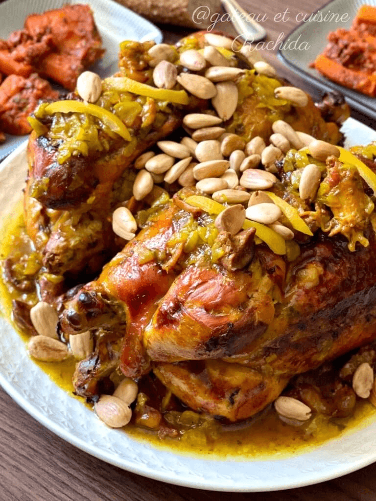
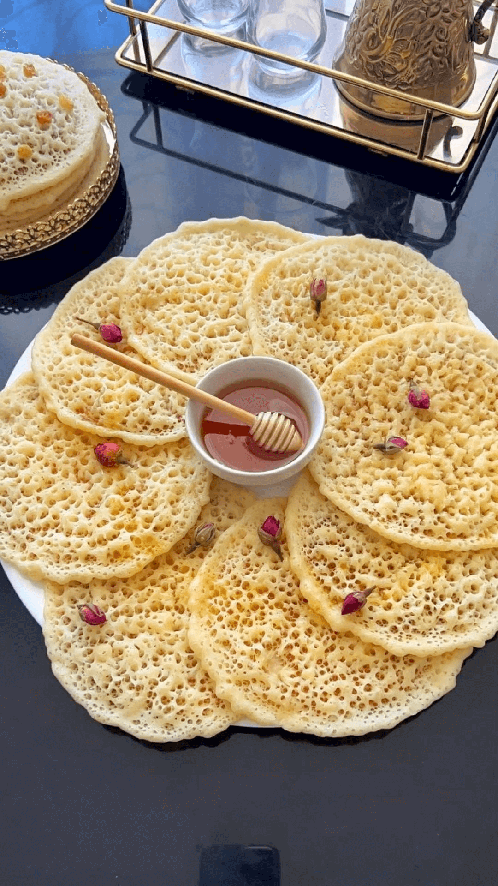
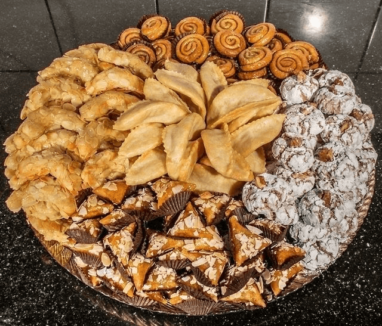

Culture et Villes
Casablanca

Casablanca, surnommée "Casa" par ses habitants, est la plus grande ville du Maroc et son
moteur économique. Avec plus de 4 millions d'habitants, elle incarne la modernité marocaine
tout en préservant son âme méditerranéenne. Son joyau architectural est sans conteste la
Mosquée Hassan II, l'une des plus grandes mosquées du monde, dont le minaret
de 210 mètres se dresse majestueusement face à l'océan Atlantique. La ville offre également
une belle corniche animée, des quartiers art déco hérités de l'époque coloniale française,
et une vie culturelle et gastronomique très riche.
Marrakech

Marrakech, la "Ville Rouge", tire son surnom de la couleur ocre de ses remparts et de ses
bâtiments traditionnels. Fondée au XIe siècle par les Almoravides, elle est l'une des quatre
villes impériales du Maroc. Son cœur battant est la célèbre place Jamaa El-Fna,
classée chef-d'œuvre du patrimoine oral et immatériel de l'humanité par l'UNESCO, où se
côtoient conteurs, musiciens, charmeurs de serpents et vendeurs d'épices. La médina abrite
des dizaines de souks spécialisés, les somptueux jardins de la Majorelle et le palais de
la Bahia, témoins d'un passé royal fascinant.
Ouarzazate

Surnommée la "Porte du désert" et le "Hollywood de l'Afrique", Ouarzazate est une ville
aux multiples visages. Située au pied du Haut Atlas, à l'entrée des grandes vallées du sud
marocain, elle est le point de départ idéal pour explorer les dunes de Merzouga et le désert
du Sahara. Elle est surtout connue pour la Kasbah d'Aït Ben Haddou, un ksar
fortifié en pisé inscrit au patrimoine mondial de l'UNESCO, qui a servi de décor à de nombreuses
productions cinématographiques internationales comme Lawrence d'Arabie, Gladiator ou Game of Thrones.
Plats marocains traditionnels
Bastila au poulet

La bastila (ou pastilla) au poulet est l'un des plats les plus raffinés de la cuisine marocaine.
Ce feuilleté croustillant en pâte warka renferme une généreuse garniture de poulet effiloché,
d'œufs brouillés aux épices, d'amandes grillées et de cannelle. Le mélange subtil du sucré et
du salé en fait une entrée royale, traditionnellement servie lors des grandes fêtes et des mariages.
Bastila au poisson

Variante maritime de la bastila classique, ce plat est particulièrement populaire dans les villes
côtières comme Casablanca, El Jadida et Essaouira. La pâte warka croustillante enveloppe une
farce à base de fruits de mer — crevettes, calamars, palourdes — parfumée aux herbes fraîches,
au gingembre et au citron. Décorée de crevettes entières et de tranches de citron, elle est aussi
belle que savoureuse.
Djaj M'hamar bdeghmira

Le Djaj M'hamar bdeghmira est un plat emblématique de la cuisine marocaine du terroir.
Le poulet, rôti à la perfection jusqu'à obtenir une peau dorée et croustillante, est nappé
d'une sauce "daghmira" préparée à base d'oignons confits, de gingembre, de curcuma et de safran.
Le tout est généreusement parsemé d'amandes entières légèrement grillées. Ce plat, à la fois
rustique et élaboré, est souvent servi lors des repas familiaux du vendredi.
Msemen (Meloui)

Le msemen est une crêpe feuilletée marocaine, dorée à la poêle et à la texture unique à la fois
croustillante à l'extérieur et moelleuse à l'intérieur. Préparé à partir d'une pâte de semoule
et de farine travaillée à la main, plié en carrés ou en cercles, il est indissociable du petit
déjeuner marocain. Il se déguste accompagné de miel, de beurre smen (beurre fermenté) ou de
fromage frais, le tout arrosé d'un thé à la menthe bien chaud.
Baghrir

Le baghrir, surnommé affectueusement "la crêpe aux mille trous", est une spécialité marocaine
préparée à base de semoule fine et de levure. Sa surface alvéolée caractéristique lui permet
d'absorber parfaitement les accompagnements sucrés. Cuit sur une seule face, il reste tendre
et spongieux. Il se déguste chaud, trempé dans un mélange de beurre fondu et de miel, et
accompagne idéalement le thé à la menthe lors du petit déjeuner ou du goûter.
Gâteaux marocains

La pâtisserie marocaine est un art à part entière, transmis de génération en génération.
Les gâteaux marocains — kaab el ghazal (cornes de gazelle) fourrées à la pâte d'amandes et
à la fleur d'oranger, fekkas aux amandes et aux raisins secs, chebakia enrobées de miel et de
graines de sésame, briwates feuilletées — sont préparés avec soin pour les fêtes religieuses
comme l'Aïd, les mariages et les cérémonies familiales. Ils sont toujours présentés sur de
grands plateaux et offerts aux invités avec le thé à la menthe.
Petit déjeuner marocain

Le petit déjeuner marocain est bien plus qu'un simple repas matinal : c'est un véritable
rituel de convivialité. Le plateau traditionnel rassemble msemen et baghrir fraîchement préparés,
du pain maison (khobz) sorti du four, du beurre, du miel, de l'huile d'argan, de la confiture
et du fromage frais (jben). Le tout est accompagné d'un grand verre de thé à la menthe bien
sucré ou d'un café au lait. Ce repas généreux reflète parfaitement l'hospitalité et l'art de
vivre à la marocaine.